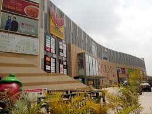
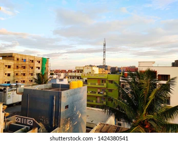

Mahadevapura is a developed residential neighborhood in Bengaluru's east. It is located along the Outer Ring Road (ORR) and is surrounded by well-known neighborhoods like Hoodi, KR Puram, Marathahalli, Kaggadasapur, and Brookfield. Because of its proximity to job centers, it is a popular residential choice for working professionals. It includes several finished and under-construction residential developments. Brigade Metropolis, NCC Nagarjuna Maple Heights, Candeur Carlisle, DNR Casablanca, and Salarpuria Sattva Magnifica are just a few of the well-known developments in the area. The ORR, Swamy Vivekanand Road, Whitefield Main Road, and the KR Puram railway station link the neighborhood to other important regions of Bengaluru. Furthermore, the planned ORR Metro Line Phase 2A and the Purple Line Extension Phase 2 of the Namma Metro will improve overall connectivity in the region. Both of these lines are scheduled to be finished by 2023. Because of its proximity to important IT parks such as Bagmane World Technology Centre, Bagmane Constellation Business Park, and ITPL, this area is a popular choice for professionals working for businesses like Dell, Amazon, Ericsson, Samsung, and Capgemini.
|  | |
|
 |